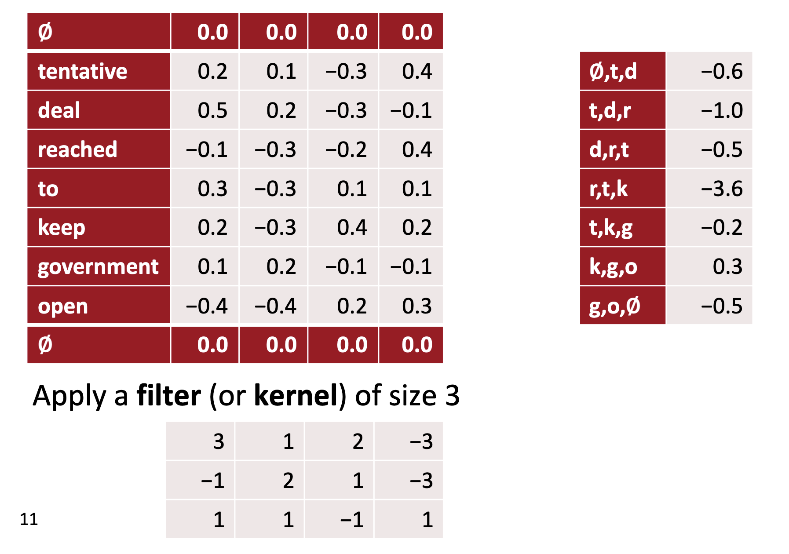
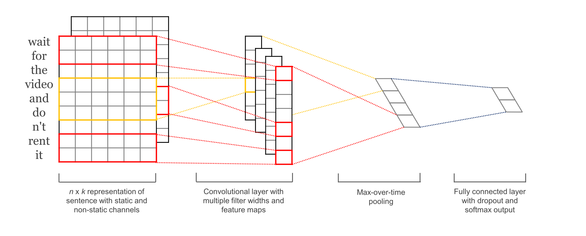

CNNs for NLP
Lviv University
CNNs for NLP
Comparison to image processing
- instead of image pixels - sentences or documents represented as a matrix
- these vectors can either be word embeddings like word2vec or GloVe
- or one-hot vectors
For a 10 word sentence using a 100-dimensional embedding we would have a 10×100 matrix as our input - this would be the “image”.
Comparison to image processing
Filters
- In vision, our filters slide over local patches of an image, but in NLP we typically use filters that slide over full rows of the matrix (words).
- Thus, the “width” of our filters is usually the same as the width of the input matrix.
- The height, or region size, may vary, but sliding windows over 2-5 words at a time is typical.
Diagram

Diagram
Description
- three filter region sizes: 2, 3 and 4, each of which has 2 filters.
- each filter generates variable-length feature maps
- Then 1-max pooling is performed over each map, i.e., the largest number from each feature map is recorded.
- Thus a univariate feature vector is generated from all six maps, and these 6 features are concatenated to form a feature vector for the penultimate layer.
- The final softmax layer then receives this feature vector as input and uses it to classify the sentence; here we assume binary classification and hence depict two possible output states.
Comparison to image processing
Intuitions broken ?
- Location invariance
- Compositionality
Benefits
A big argument for CNNs is that they are fast. Very fast.
Applications
Classification tasks
Good idea:
- Sentiment Analysis
- Spam Detection
- Topic Categorization
Applications
Order of words lost
Bad idea (unless you do it right):
- Sequence Tagging
- PoS Tagging
- Entity Extraction (with a caveat)
CNNs in NLP
Comparison with transformers
- PaLM: 540B parameters
- GPT-3: 175B parameters
- T5-11B: 11B parameters (FOSS, outperforms GPT-3)
- GPT-J: 6B parameters (FOSS, outperforms GPT-3)
- CNNs: less than 200k parameters
CNNs in NLP
CNN benefits
The main advantage of CNNs over previous NLP algorithms is that
- they can recognize patterns in text no matter where those patterns occur in the text (translation invariance)
- and how spread out they are (scale invariance).
CNNs in NLP
Comparison to other NLP methods
- TF-IDF: don’t recognize and generalize from text patterns
- fully-connected NNs: over-generalize from particular patterns at particular locations
- RNNs:
- Cognitively plausible
- not best for classification (if just use last state),
- much slower than CNNs
- good for sequence tagging and classification
- great for language models
- can be amazing with attention mechanisms
CNNs in NLP
Stencil example
CNNs in NLP
Considerations
- We don’t need to program the kernels - just decide their width.
- CNN optimizer will calculate weights within the kernel
- by matching the patterns that are most predictive of the target variable.
CNNs in NLP
What does CNN do with a kernel?
- Measure similarity between kernel and text (dot product)
- Find the max value of kernel match by sliding through textl
- Convert max value to a probability using activation function (max pooling)
Convolution is steps 1 and 2.
CNNs in NLP
CNNs in NLP
CNNs in NLP
CNNs in NLP

CNNs in NLP
CNNs in NLP
CNNs in NLP
CNNs in NLP
CNNs in NLP
PyTorch 1-D CNN on 4-D embedding vectors
CNNs in NLP
Manual kernel
Let’s start with a manual kernel first.
from nltk.tokenize import word_tokenize
from nltk.tag import pos_tag
import pandas as pd
tags = 'ADV ADJ VERB NOUN'.split()
quote = 'The right word may be effective, but no word was ever as effective as a rightly timed pause.'
tokens = pos_tag(word_tokenize(quote), tagset='universal')
tagged_words = [[word] + [int(tag == t) for t in tags] for word, tag in tokens]
df = pd.DataFrame(tagged_words, columns=['token'] + tags).T
print(df)CNNs in NLP
0 1 2 3 4 5 6 7 8 9 10 11 12 \
token The right word may be effective , but no word was ever as
ADV 0 0 0 0 0 0 0 0 0 0 0 1 1
ADJ 0 1 0 0 0 1 0 0 0 0 0 0 0
VERB 0 0 0 1 1 0 0 0 0 0 1 0 0
NOUN 0 0 1 0 0 0 0 0 0 1 0 0 0
13 14 15 16 17 18 19
token effective as a rightly timed pause .
ADV 0 0 0 1 0 0 0
ADJ 1 0 0 0 0 0 0
VERB 0 0 0 0 1 0 0
NOUN 0 0 0 0 0 1 0 CNNs in NLP
CNNs in NLP
CNNs in NLP
CNNs in NLP
CNNs in NLP
The y value reaches a maximum value of 3 where all 3 values of 1 in the kernel line up perfectly with the three 1’s forming the same pattern within the part-of-speech tags for the sentence.
Embeddings: a recap
Embeddings in PyTorch
nn.Embedding
The nn.Embedding layer is a simple lookup table that maps an index value to a weight matrix of a certain dimension.
Training
- During the training the parameters of the nn.Embedding layer in a neural network are adjusted in order to optimize the performance of the model.
- Vectors are optimised to represent the meaning or context of the input tokens in relation to the task the model is trained for (e.g. text generation, language translation).
Embeddings
Description
- embedding lookup table shape is \((10,50)\).
- each row is initialized with
torch.nn.init.uniform_() - weights are initialized with random values between -1 and 1.
Embeddings
Embeddings
Embeddings
Initialization
- Normal: initializes the weights with random values drawn from a normal distribution with a mean of 0 and a standard deviation of 1. It is also known as Gaussian initialization.
- Constant: initializes the weights with a specific constant value.
Embeddings
Initialization
- Xavier: based on the work of Xavier Glorot and Yoshua Bengio, and they are designed to work well with sigmoid and tanh activation functions. They initialize the weights to values that are close to zero, but not too small.
- Kaiming: based on the work of He et al., and they are designed to work well with ReLU and its variants (LeakyReLU, PReLU, RReLU, etc.). They also initialize the weights to values that are close to zero, but not too small.
- Pre-trained: pre-trained word vectors such as GloVe or word2vec, which have been trained on large corpora and have been shown to be useful for many natural language processing tasks. The process of using a pre-trained word vectors is called fine-tuning.
Embeddings
Pre-trained embeddings: advantages
- Improve model performance: provide the model with a good set of initial weights that capture the meaning of words.
- Save computation time and resources: embeddings have already been learned on a large corpus.
- Transfer learning: pre-trained word embeddings can be used for transfer learning, which means that you can use the embeddings learned on one task as a starting point for a different but related task.
Embeddings
Pre-trained embeddings example
Embeddings
Embeddings

Embeddings
CNNs in NLP
Kim paper
Kim paper
Abstract
We report on a series of experiments with convolutional neural networks (CNN) trained on top of pre-trained word vectors for sentence-level classification tasks. We show that a simple CNN with little hyperparameter tuning and static vectors achieves excellent results on multiple benchmarks. Learning task-specific vectors through fine-tuning offers further gains in performance. We additionally propose a simple modification to the architecture to allow for the use of both task-specific and static vectors. The CNN models discussed herein improve upon the state of the art on 4 out of 7 tasks, which include sentiment analysis and question classification.
Kim paper
The input layer is a sentence comprised of concatenated word2vec word embeddings. That’s followed by a convolutional layer with multiple filters, then a max-pooling layer, and finally a softmax classifier.
Kim paper
Let \(\boldsymbol{x}_i \in \textrm{R}^k\) be the \(k\)-dimensional word vector corresponding to the \(i\)-th word in a sentence.
A sentence of length \(n\) (padded when necessary) is represented as \[ \boldsymbol{x}_{1:n} = \boldsymbol{x}_1 \oplus \boldsymbol{x}_2 \oplus \dots \boldsymbol{x}_n, \] where \(\oplus\) is the concatenation operator.
In general, \(\boldsymbol{x}_{i:i+j}\) will refer to the concatenation of words \(\boldsymbol{x}_i, \boldsymbol{x}_{i+1}, \dots, \boldsymbol{x}_{i+j}\).
Kim paper
A convolution operation involves a filter \(\boldsymbol{w} \in \textrm{R}^{hk}\), which is applied to a window of \(h\) words to produce a feature.
Kim paper
For example, a feature \(c_i\) is generated from a window of words \(\boldsymbol{x}_{i:i+h-1}\) by \[ c_i = f(\boldsymbol{w} \cdot \boldsymbol{x}_{i:i+h-1} + b), \] where \(b \in \textrm{R}\) is a bias term and \(f\) is an activation function.
Kim paper
This filter is applied to each possible window of words in the sentence \[ \left\{\boldsymbol{x}_{1:h}, \boldsymbol{x}_{2:h+1}, \dots, \boldsymbol{x}_{n-h+1:n}\right\} \] to produce a feature map: \[ \boldsymbol{c} = \left[c_1,c_2,\dots,c_{n-h+1}\right], \; c \in \textrm{R}^{n-h+1}. \]
Kim paper
Pooling
Apply a max-overtime pooling operation (Collobert et al., 2011) over the feature map and take the maximum value \[ \hat{\boldsymbol{c}} = \max{\boldsymbol{c}} \] as the feature corresponding to this particular filter.
- multiple filters
- softmax layer whose output is the probability distribution over labels.
- multiple channels: one is kept static, another is fine-tuned via backprop.
Kim paper
Hyperparameters
- Nonlinearity: ReLU
- Window filter sizes h = 3, 4, 5
- Each filter size has 100 feature maps
- Dropout p = 0.5 (2-4% accuracy improvement)
- \(L_2\) constraint \(s=3\) for rows of softmax
- Mini batch size for SGD training: 50
- Word vectors: pre-trained with word2vec, k = 30
Kim paper
Kim paper
Dataset descriptions
- MR: Movie reviews with one sentence per review. Classification involves detecting positive/negative reviews (Pang and Lee, 2005).
- SST-1: Stanford Sentiment Treebank - an extension of MR but with train/dev/test splits provided and fine-grained labels (very positive, positive, neutral, negative, very negative), re-labeled by Socher et al. (2013).
- SST-2: Same as SST-1 but with neutral reviews removed and binary labels.
Kim paper
Dataset descriptions
- Subj: Subjectivity dataset where the task is to classify a sentence as being subjective or objective (Pang and Lee, 2004).
- TREC: TREC question dataset - task involves classifying a question into 6 question types (whether the question is about person, location, numeric information, etc.) (Li and Roth, 2002).
- CR: Customer reviews of various products (cameras, MP3s etc.). Task is to predict positive/negative reviews (Hu and Liu, 2004).
Kim paper
Variants
- CNN-rand: Our baseline model where all words are randomly initialized and then mod- ified during training.
- CNN-static: A model with pre-trained vectors from word2vec. All words— including the unknown ones that are ran- domly initialized—are kept static and only the other parameters of the model are learned.
- CNN-non-static: Same as above but the pre- trained vectors are fine-tuned for each task.
- CNN-multichannel: A model with two sets of word vectors. Each set of vectors is treated as a ‘channel’ and each filter is applied to both channels, but gradients are back-propagated only through one of the channels. Both channels are initialized with word2vec.
Kim paper
Character-level networks
Character-level networks
Zhang, Zhao, Lecun (2015)
- explore text as a kind of raw signal at character level
- no knowledge about semantics/syntax required
- no knowledge of words required
- can work for different languages
- misspellings or emoticons may be naturally learnt
Character-level networks
Design
Main component is the temporal convolutional module. Suppose we have a discrete input function \[ g(x) \in [1,l]\rightarrow \mathrm{R}, \] and a discrete kernel function \[ f(x) \in [1,k]\rightarrow \textrm{R}. \]
The convolution \(h(y) \in [1, \lfloor(l-k+1)/d\rfloor] \rightarrow \mathrm{R}\) between \(f(x)\) and \(g(x)\) with stride \(d\) is defined as \[ h(y) = \sum\limits_{x=1}^k f(x) \cdot g(y\cdot d - x + c), \] where \(c=k-d+1\) is a offset constant.
Character-level networks
Parametrization
Module is parameterized by a set of such kernel functions \(f_{ij}(x)\), where \(i=1,2,\dots,m\), and \(j=1,2,\dots,n\) which we call weights, on a set of inputs \(g_i(x)\) and outputs \(h_j(y)\).
We call each \(g_i\) (or \(h_j\)) input (or output) features, and \(m\) (or \(n\)) input (or output) feature size.
Output \(h_j(y)\) is obtained by a sum of the convolutions between \(g_i(x)\) and \(f_{ij}(x)\).
Character-level networks
Temporal max-pooling
A 1-D version of max-pooling used in computer vision.
Given a discrete input function \(g(x) \in [1,l]\rightarrow \mathrm{R}\), the max-pooling function \(h(y) \in [1, \lfloor(l-k+1)/d\rfloor] \rightarrow \mathrm{R}\) of \(g(x)\) is defined as \[ h(y) = \max\limits_{x=1}^k g(y\cdot d - x + c). \]
Character-level networks
Parameters
- Activation fn: \(h(x) = \max\left\{0,x\right\}\)
- SGD with minibatch size=128
- Momentum=0.9
Character-level networks
Quantization
- use alphabet of size \(m\)
- quantize each character using 1-of-m (or one-hot) encoding
- then the sequence of characters is transformed to a sequence of \(m\)-sized vectors with fixed length \(l_0\)
Character-level networks
Alphabet size: 70
Character-level networks
Model design. Number of features: 70. Input feature length: 1014.
Character-level networks
Number of features: 70. Input feature length: 1014.
Character-level networks
Character-aware neural language models (2015)